Data Structures and Algorithms
with Object-Oriented Design Patterns in C++
Data Structures and Algorithms
with Object-Oriented Design Patterns in C++
To determine the average running time for the quicksort algorithm,
we shall assume that each element of the sequence has an equal chance
of being selected for the pivot.
Therefore, if i is the number of elements in a sequence of length n
less than the pivot,
then i is uniformly distributed in the interval [0,n-1].
Consequently, the average value of 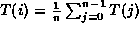.
Similarly, the average the value of
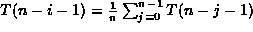.
To determine the average running time,
we rewrite Equation  thus:
thus:
To solve this recurrence we consider the case n>2
and then multiply Equation by n to get
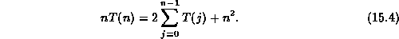
Since this equation is valid for any n>2, by substituting n-1 for n we can also write
which is valid for n>3.
Subtracting Equation from Equation gives
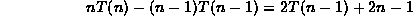
which can be rewritten as
Equation can be solved by telescoping like this:
Adding together Equation through Equation gives
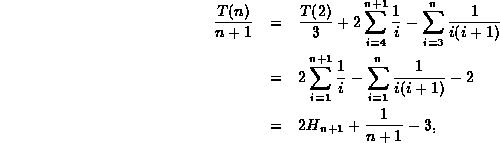
where 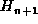 is the 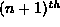 harmonic number . Finally, multiplying through by n+1 gives
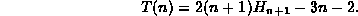
In Section it is shown that
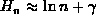,
where 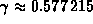
is called Euler's constant .
Thus, we get that the average running time of quicksort is
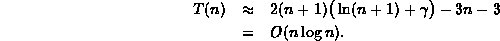
Table summarizes the asymptotic running times
for the quicksort routine and compares it to those of bubble sort.
Notice that the best-case and average case running times
for the quicksort algorithm have the same asymptotic bound!
| running time | |||
|
algorithm | best case | average case | worst case |
| bubble sort | | | |
| quicksort (random pivot selection) | | | |
 Copyright © 1997 by Bruno R. Preiss, P.Eng. All rights reserved.
Copyright © 1997 by Bruno R. Preiss, P.Eng. All rights reserved.